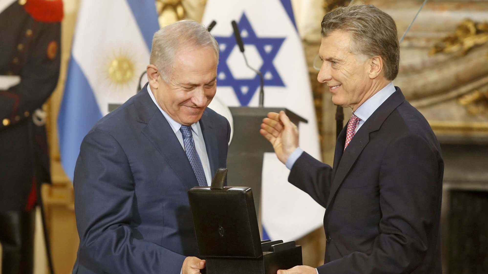
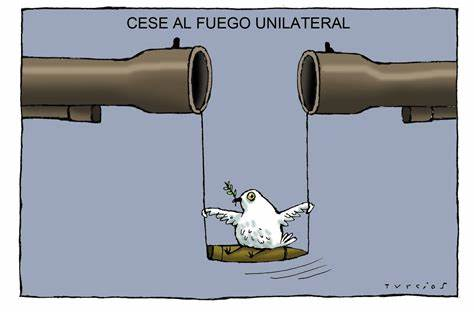
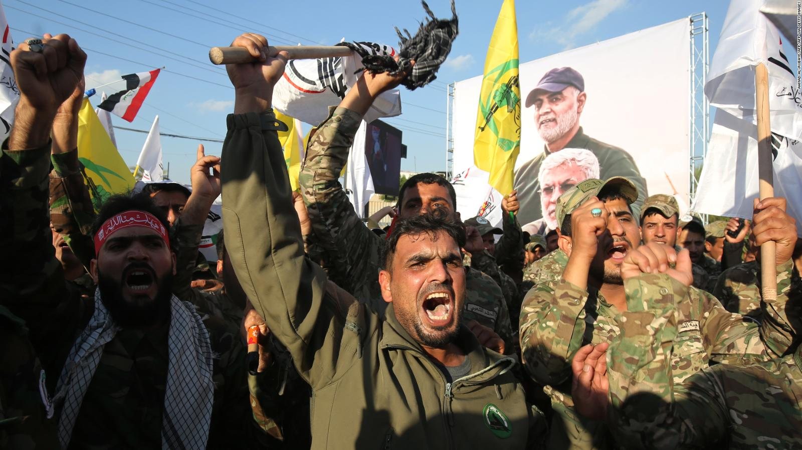

Diálogo y Diplomacia: La diplomacia es esencial para resolver conflictos. Las conversaciones directas y mediadas entre las partes en conflicto pueden servir como un medio para abordar cuestiones pendientes y llegar a acuerdos. La comunidad internacional puede desempeñar un papel mediador en este proceso.

Cese al Fuego y Acuerdos de No Agresión: Establecer y mantener acuerdos de cese al fuego es un paso importante para reducir la violencia en conflictos en curso, como en Siria y Yemen. Estos acuerdos pueden allanar el camino para negociaciones de paz más amplias.

Presión Internacional: La comunidad internacional puede ejercer presión sobre las partes en conflicto para que se comprometan en un proceso de paz. Esto puede incluir sanciones, embargos de armas y otras medidas diplomáticas.